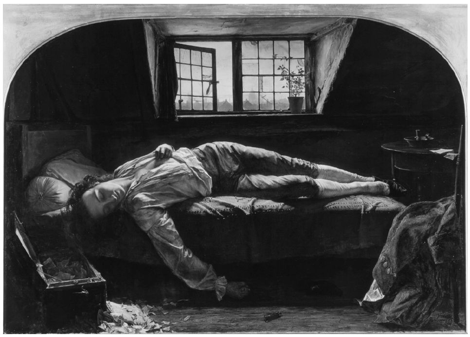
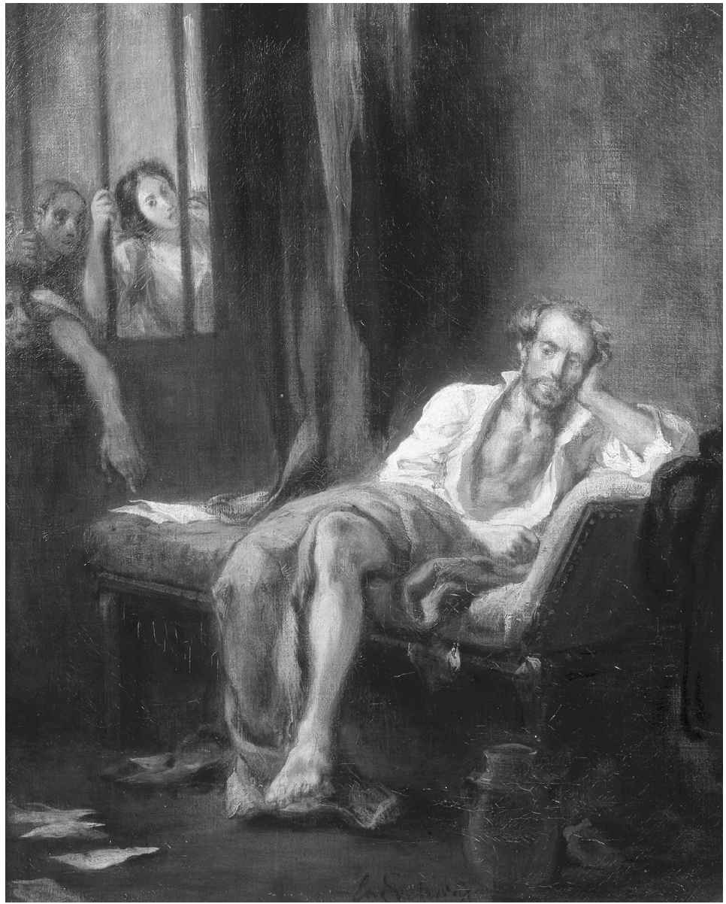
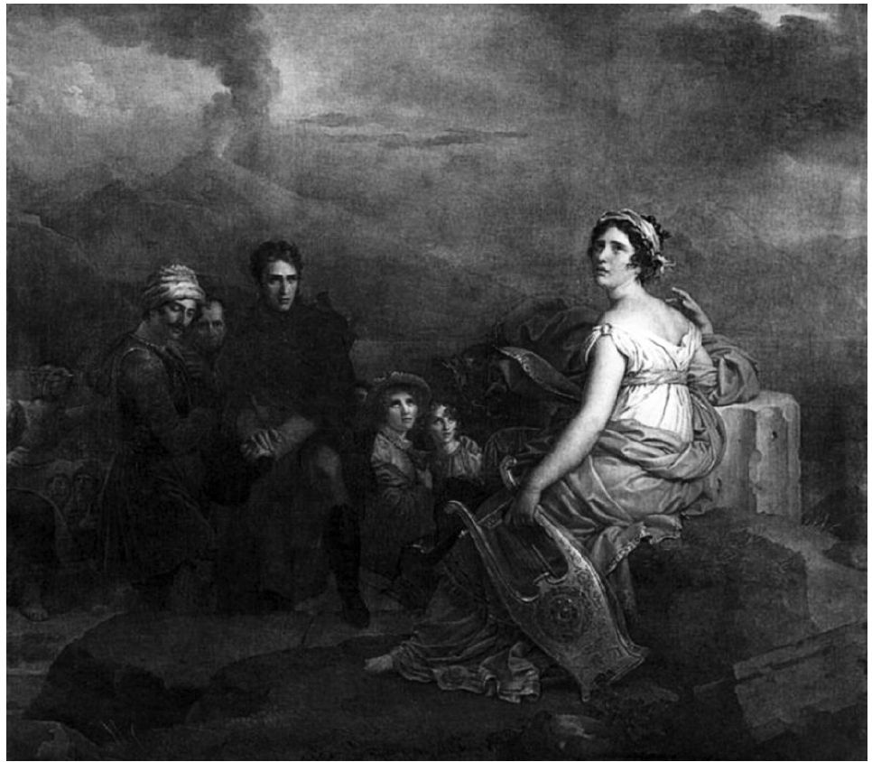

没有什么比浪漫主义赋予诗人声望乃至荣耀更能凸显其自身的特性了。诗人不但享有先知、神父和传教士的名望，还被称作英雄、立法者乃至造物主，几乎和神明无异。“我们身肩重任，”1798年诺瓦利斯宣称，“我们肩负着改变世界的使命。”一如雪莱在《诗辩》（1821）最后一句中写道：“诗人是这个世界未被公认的立法者。”这些论断在当时显得十分大胆，但是在我们现今大多数人看来似乎更有些荒谬，这表明人们的文化观经历了一定程度的演变。我们更倾向于赞同诗人奥登1939年发表的观点，即“诗无济于事”。诺瓦利斯本人曾因为总是“神思恍惚地在蓝色太空中东飘西荡”［《浪漫派》（1836），2.4］而被诗人海因里希·海涅斥为“无能为力”。雪莱则被马修·阿诺德斥作“梦幻的天使”［《雪莱》（1888）］。
尽管如此，在嘲讽这些浮夸卖弄的浪漫主义说辞之前，我们至少应该注意雪莱使用的“未被公认的”这一形容词，因为若是对诗人的尊崇是浪漫主义的特征，那么哀叹诗人在现代世界中被忽视、排挤的境遇以及遭遇的苦难也同样独具特色。他们认为，古希腊或中世纪时，情况不一样；现今这些伟大的灵魂和世界的拯救者终其一生都未得到应有的赏识。意大利诗人、小说家亚历山德罗·曼佐尼曾以讽刺的口吻写道：“从未有人听取他们的意见，这就是诗人的宿命。”［《婚约夫妇》（1827），第28章］而这种宿命通常又会衍生出忧郁和悲痛之情。此外，我们还应牢记，抛开浪漫主义诗人本身给我们的印象，相比于现代，诗歌在诗人所处的时代要更受欢迎，并且在整个欧洲更为人们所重视，受众面也呈现不断扩大的趋势。其读者甚至包括公认的立法者，他们中的一部分人自己也创作诗歌。人们会在客厅和裁缝室里大声朗读着诗行，在酒馆里吟诵或颂唱着诗篇，在庄严的场合宣读着诗文，也会在课堂上大量背诵诗歌。每一次重大的公共事件都会引发报纸连续刊载一系列诗歌。以华兹华斯为例，在旷日持久的法国对外战争期间，几乎每爆发一场战役，不论是威尼斯共和国的灭亡、蒂罗尔人民的反抗抑或是滑铁卢战争，他都必定会向报社寄送一首或多首十四行诗。在当时的俄国、德国大多数州郡以及拿破仑三世统治下的法国，出版审查制度空前森严，诗歌有时是人们批判社会的唯一途径，尽管它们不得不以含蓄、隐晦的方式去批判。1851年路易·波拿巴发动政变之后，维克多·雨果被安全流放至海峡群岛，他通过笔墨公开反对“小拿破仑”，造成不小的影响。他1870年回到法国，成了英雄。有些诗人——真正的而非理想化的诗人——扮演的角色和现今的电影明星或脱口秀主持人没有什么不同，其中少数诗人，如拜伦、拉马丁和雨果本人事实上还是他们本国的国会议员。
由此可见，情况甚是复杂，且不无讽刺与荒谬。拜伦和雨果的追随者甚众；普希金去世时，沙皇政府简化其葬礼仪式以防其转变为危险的示威游行。然而，当时很多诗人和各行各业的艺术家们聚集在“波希米亚”没有暖气的阁楼里，一起嘲讽那些无视他们存在的“资产阶级”。这是因为，大体而论，诗歌艺术确实受到民众的喜爱，许多诗人也得到世人的颂扬，但用诗人柯勒律治的话来说，最令人感到痛苦的就是大多数诗人仍被世界“冷眼相待”。如果说如今几乎没有诗人会悲叹他们的作品不受大众的重视，那是因为他们从不对两个世纪之前仍然存在的名副其实的“声誉”抱有希望。本章将主要阐述诗人的浪漫主义形象或自我形象，对诗人真实的境遇只是一笔带过。这种形象——被遗忘的天才、神圣的灵魂、不被赏识的先知——对我们仍有很大的吸引力，虽然现今具有代表性的诗人对社会名誉不抱多大期望，但不管怎样，他仍在大学里谋得一份教职。
神圣的诗人
雨果的早期颂歌《新颂歌集》（1824）开篇写道：
诗人遭受着内心的悲痛，他那逐渐长大的棕榈树似乎是殉道之树，但它也暗示着最终的胜利，因为基督教殉道者在忍受尘世的折磨后，就进入了天堂。棕榈树也朴实地高耸于那美丽却转瞬即逝的欢愉之花上。雨果接着描述了诗人与缪斯、诗人与基督及先知们灵魂间的无声交流，然后，在再次警告“无礼的凡人”远离诗人之后，得出结论：
毫无疑问，这是年轻雨果一厢情愿的白日梦，但它打破成规，令人惊叹，一些读者为之激动不已。这位未经确认的精神交流者成为世界上睿智的立法者，成为摩西第二。事实上，摩西在雪莱《诗辩》的“诗人”名单中出现过。阿尔弗雷德·德·维尼1822年创作了诗歌《摩西》，描绘了摩西生命的最后时刻。当摩西看到自己有生之年无法踏入的应许之地时，他因上帝授予他的使命，仍然被他的人民所孤立。维尼后来写道，摩西代表“天才之人，厌倦了永恒的独居，因看到随着自己荣耀的增长变得越来越孤独无趣而陷入绝望”。
普希金在《先知》（1826）中以第一人称讲述了一位六翼天使如何用手指抚慰诗人疲惫的双目，“像一只受惊的兀鹰/我睁开了先知的眼睛”。这位诗人经过多次变形，现在已变身为先知，被派往世界执行旨意，“用我的道把人心烧亮”。柯勒律治用一幅缪斯的幻象结束其神秘而悦耳的《忽必烈汗》（1798），如果他可以重唱缪斯的歌声，那将会使所有听见他唱歌的人哭泣。
除了雪莱的表述，这些描述均大量借用了宗教范畴。柯勒律治有异教徒的气息，但是，其诗歌的最后一个词却是“天堂”。即使是雪莱，在前述句子中也声称“诗人是未知神灵的祭司长”，祭司长是希腊祭司或者奥秘的启示者。我们似乎正见证着世俗诗人对基督圣坛和讲道台的某种篡夺，这些诗人有些是基督徒，有些不是。这种篡夺似乎已受到大多数欧洲国家越来越多读者的欢迎。这些读者如果不是完全不信仰宗教，至少也是脱离了特定的教会和教义，但却对某种宗教情绪或感觉保持着积极的态度。（稍后，我们将会把浪漫主义作为一种宗教运动来探讨。）
许多18世纪的读者同意托马斯·格雷的观点：在约翰·弥尔顿（1608—1674）或者至少在［约翰·］德莱顿之后，英国再也没有出现过伟大的诗人。前者著有《失乐园》，曾“高高骑在/六翼天使的狂喜之翼上”；后者创作出“不那么放肆的专横的马车（战车）”：“哦！神圣的七弦竖琴，什么样的勇敢神灵/现在将你唤醒？”（《诗歌的进程》，1757）这并不仅仅是回顾过去，因为对英国、法国和德国的很多人来说，那时的情况就像这样——抒情诗数量激增标志着浪漫主义走上舞台，此后的18世纪的很多时期看起来有些“前浪漫主义”，像是预测、准备或是孵化着伟大诗人的即刻诞生，平静的外表下已有隆隆的先兆之声。这无疑是一个时代，在这个时代，诗人们自己，不仅格雷，还有阿肯塞德在《论抒情诗》（1745）以及柯林斯在《诗性颂》（1746）中均赞颂他们兄弟诗人的天才之处和神圣天职，并且急欲知道下一个弥尔顿何时出现。在早期颂歌《希腊人的学徒》（1747）中，克洛卜施托克虚构了一个即将到来的年轻诗人，他将以更崇高的名义，拒绝勇士的骄傲和战场的荣耀：
毫不奇怪，鉴于这一期盼，两代浪漫主义者的数位诗人不仅感知到神的召唤和神圣感，而且把他们的天职作为很多诗歌的主题。华兹华斯在其篇幅最长、最为杰出的作品中写下了他一生的故事，特别是那些塑造并最终确立他诗人身份的经历。该作品从1799年开始创作，直到1850年他去世那年，才以《序曲》为名发表。该诗分13卷，后修订为14卷，是献给其诗人朋友柯勒律治的无韵体诗歌，有些诗行可以达到弥尔顿的“崇高”效果。该诗本身就含蓄地证明了其自身价值，但华兹华斯在明确宣称自己在远见之人或先知诗人中的地位时却毫不羞涩：“这应是我的骄傲/我敢踏足这片圣地，/不谈梦幻，但谈神谕之事。”接着，他继续表明信念：
（1805，《序曲》，12.250—252，307—312）
他设想着那么一天，人们“重新崇拜陈旧的偶像”之后，他将和柯勒律治一起参与“救赎他们的……工作”，并以此结束了这部精神自传：
（13.432—445）
柯勒律治本人在听到华兹华斯吟诵《序曲》的当天晚上创作了诗歌《致华兹华斯》（1807），将《序曲》称为“预言的诗歌”和“神圣的书卷”；当诗歌吟诵结束时，“我发现自己在潜心祷祝！”20年后，弗雷西亚·海曼斯将华兹华斯称为“真正的吟游诗人、神圣的吟游诗人！”（《致华兹华斯》，1828）
弗里德里希·荷尔德林问了格雷曾经问过的问题：“像旧时诗人一样的诗人如今何在？”之后，他回答道：乌拉尼亚，至高的缪斯（也是弥尔顿所乞灵的），如今在沉默中踌躇不前，酝酿着“一部欢乐之作”，将会体现德意志人民精神的“一部新作”
（《德意志之歌》，1799）。在《诗人的天职》（1800—1801）中，他描述了诗意的冲动如何降临他的身上——
以及他将如何以这种精神状态去面对华兹华斯所说的“崇拜陈旧的偶像”，在那里“神圣的力量流逝了，仁慈/为运动所浪费，忘恩的/一代阴谋家们”。
拉马丁也被神灵所控制，“激情”已如雄鹰般向他猛扑过来：
（《激情》，1820）
这种情感的迸发让他疲惫不堪，几近绝望，但是他的使命感依旧很强。一年之内，拉马丁觉得他已经收到了上天的指示来创作一部伟大的人类史诗。当他得知自己可能具有阿拉伯血统时，便声称这是他救世主般命运的象征。他相信，所有真正的诗人都能读懂自然的“崇高语言”，这种语言曾为所有人所了解，但现在只有诗人这样的神职才能记起；诗人的任务是通过这种语言与上帝沟通，并向大众解读上帝和自然。1848年，民众选择拉马丁成为临时共和国的领袖时，他们证实了数十年前上帝就已向他宣示的事情。
鹰
正如我们所知，普希金把自己比作睁开双眼的年轻兀鹰；
拉马丁感觉自己被鹰所控制，正如伽尼墨得斯被宙斯所化之鹰擒往奥林匹斯山一般。这两个形象体现了两种不同概念的智慧——普希金是其艺术的神圣主宰者，拉马丁则是痴迷于缪斯或诸神的忠实仆人。这两者各自均有古代先例，在浪漫主义中也很常见。普希金和拉马丁均使用了鹰的隐喻，但是在某些方面却更加反映出浪漫主义的特性，令人惊叹不已。
自希腊以降，诗人就一直被喻为夜莺。赫西奥德曾称自己为夜莺，忒奥克里托斯称荷马为“希俄斯岛的夜莺”（该岛被认为是荷马的出生地）。这种失恋的鸟儿吟唱着普鲁旺斯行吟诗人和德国抒情诗人的失恋之歌。弥尔顿因在黑夜作诗而自比为夜莺。英语中最为著名的是济慈笔下的夜莺，它放开喉咙、自在地歌唱；济慈听着，强压着自己的嫉妒之情（《夜莺颂》，1819）。在俄国这个处在浪漫主义边缘的国度，杰尔查文呼吁后来的诗人：“吟唱卡拉姆津的作品！——即使在散文中夜莺的嗓音也清晰可辨”（《漫步叶卡捷琳娜宫》，1791），而卡拉姆津则在他的《夜莺、寒雀与渡鸦》（1793）中控诉道：夜莺已在森林中失去一席之地，优美的歌声淹没在寒雀和渡鸦刺耳的叫声中。
或者，诗人被喻为天鹅。贺拉斯称品达为狄耳刻的天鹅，并由此首创了“莎士比亚是艾冯河的天鹅”和“其他诗人是其他某条河流的天鹅”这两个持续千年的陈词滥调。传说天鹅临终前会高歌一曲，因此，在奥维德宣称他写于孤独流放黑海沿岸期间的《伤感之歌》的最后一卷是天鹅的悲伤之歌之后，“天鹅之歌”就成了另外一个陈词滥调。此外，还有云雀之喻。中世纪时，云雀才飞入诗歌，并从那时起就一直倾吐着心声。华兹华斯曾写了两首云雀诗，雪莱的《致云雀》（1820）与济慈的《夜莺颂》同样出名。雪莱在诗中将这小小的鸟儿比喻为“一位隐身在思想明辉之中的诗人”。艾兴多夫在《云雀》（1818）中详细描述了云雀飞翔时或攀升而上，或滑翔而下，或一飞冲天的姿态。匈牙利诗人裴多菲在一场战役结束后听见云雀的歌声，才想起自己首先是一位诗人，其次才是一名战士（《云雀啭鸣……》，1849）。甚至布谷鸟也加入了这些鸟类吟游诗人的合唱中，它是华兹华斯最喜欢的鸟类之一。
正如我们所预期的，这些鸟儿的啁啾啭鸣之声遍布浪漫主义诗歌，鹰的出现却使它们黯然失色。自希腊抒情诗人品达将自己喻为鹰之后，鹰便成为诗人笔下最多的比喻了。之后，但丁在《神曲》第一部《地狱篇》中将荷马称为鹰；格雷在《诗歌的发展》（1754）中将品达誉为“底比斯之鹰”，“高贵自在地飞翔在广袤无垠的碧蓝深空”，这给它返程提供了动力。而格雷本人则被詹姆斯·贝蒂称颂为又一个如鹰一般的品达：“拥有鹰一般敏捷的身手和锐利的目光，/达到品达的高度后，自由地在天空中翱翔。”（《论不朽之作》，1766）克洛卜施托克在《忒思孔神》（1764）中比较了贺拉斯笔下的天鹅和“颂歌中那变化多端、果敢勇猛且更具德国特色的飞鸟，/现今就像鹰一样飞至云端，/后再俯冲而下，落在橡树顶端的枝头上”。因而，正如品达比贺拉斯飞得更高一样，德国新颂歌也胜过旧时的新古典主义作品。雪莱也像鹰一样飞翔：
（《自由颂》，1820）
这里的“猎物”一定是雪莱诗歌的题材。
这一隐喻看似牵强，但不止一位法国诗人使用这个意象来表达异乎寻常的含义。下文是拉马丁写给拜伦的长诗《致拜伦》的开篇部分（1820）：
和克洛卜施托克一样，拉马丁对比了“发出悲鸣之声的鸟”，即天鹅和造成这悲鸣之声的鹰。这里的天鹅和鹰分别隐喻了拉马丁本人和拜伦。雨果为鹰这一形象创作了一首完整的诗歌——《致我的朋友S–B［圣伯夫］》（1828）。诗中，被比作鹰的诗人都是“天才”，它们的猎物即为诗人所创造出的作品，而那些年幼的雏鹰必定是读者或是未来的诗人，是初出茅庐、羽翼渐丰的小雨果们：
在《异域之旅与归家》（1800—1801）中，荷尔德林写道：“力大无穷的鸟标志着时间的流逝，/徘徊在高空的峰峦间，召唤着白昼的到来”（11—12）。这里的鹰代表着诗人，正在这首诗中宣告神的降临和新的一天的到来。《日耳曼》（1799—1803）中的鹰从印度河出发，一直飞到希腊和意大利（42及其后）。在诗歌片段《老鹰》（1800—1805）中，鹰应该是叙述者，其双亲从印度河茂密的森林出发（10），而荷尔德林认为那里是诗神狄俄尼索斯的诞生之地。
这些仅仅是18世纪后期聚集在欧洲诗歌天空中众多具有象征意义的鹰的一部分，它们一直群集到1850年左右，之后才慢慢减少，到19世纪末基本成了稀有鸟类。人们记起鹰不是鸣禽时，都觉得非常惊讶。据说，夜莺、云雀、布谷鸟甚至是弥留之际悲鸣的天鹅均会像诗人一样歌唱，而鹰并不会像它们一样歌唱，反倒是更有可能吞食它们。鹰是众鸟之王、宙斯之伴、最大的猛禽、最高的翱翔者，而且，据古老传说记载，鹰能直视太阳而不被灼伤致盲。这些新贵的云雀和其他会歌唱的鸟儿妄想成为贵族甚至是天空的主宰者？这实在是自以为是，甚至荒诞不经。它们不过是诗人罢了！但这正切中要害，作为天才、诗人或诗意激情的象征，鹰成了一个引人注目和独具浪漫主义特征的标识。
然而，有些浪漫主义之鹰却发现自己疾病缠身，伤痕累累，囿于牢笼。安妮特·冯·德罗斯特–许尔斯霍夫在《病之鹰》中描述了一只有气节的断翅雄鹰，它宁愿做一只断翅的雄鹰也不愿做偎在温暖、舒适火炉边的小鸡。这首诗是她回应歌德早期的诗歌《鹰与鸽》（1773）而作的。后者是一首寓言诗，探讨了两种诗歌类型：一只幼鹰捕猎时被猎人打伤翅膀，无法飞翔；一只鸽子善意地为它指出所有地上和灌木丛中的食物。幼鹰答道：“哦，智者！你说话的样子像一只鸽子！”济慈看到埃尔金大理石雕时感觉自己就像一只病重的鹰。弗雷西亚·海曼斯颇有远见地将“天赋异禀且志向远大”的命运比喻为“受伤的鹰”。但是，鹰的常规力量和超凡威力让它难以用来象征受难诗人，而浪漫主义者选择更为直白的方式去表达这一重要且令人迷恋的主题。
早逝诗人
浪漫主义诗人或艺术家英年早逝依旧是老生常谈的话题，他们多死于肺结核、自杀、决斗或是饿死在阁楼里或流放途中。英语世界里，尽管第一代诗人布莱克、华兹华斯和柯勒律治终其天年，济慈、雪莱和拜伦这些“第二代”浪漫主义诗人仍将英年早逝的印象深深印在了我们的脑海之中。济慈25岁时因肺结核病逝于罗马，雪莱29岁时溺亡于勒瑞奇海湾，拜伦36岁时因高烧死于希腊，普希金37岁时在一场决斗中受伤而亡。卡罗利妮·冯·冈德罗德26岁时，被她所爱的男子拒绝，开枪射向自己的心脏。但是，这些浪漫主义者自己生前已经前往那些早逝诗人的墓前进行祭拜。
现今几乎已被遗忘的法国诗人查尔斯·洛森（1791—1820），在英年早逝的前一年写下了《临终卧床的年轻诗人》（1819），从而在法国掀起了阅读早逝诗人诗歌的热潮。但是，他的其他事情更值得我们关注。正如圣伯夫在1840年一篇随笔中写到的那样，洛森在西班牙有处城堡，城堡带有一个与世隔绝的小树林。
洛森翻译过提布卢斯的很多诗歌。古代世界最伟大的哀歌，即奥维德的《恋歌》第三卷第九节中曾经称赞过提布卢斯。在那首挽歌中，奥维德声称吟游诗人是神圣的，受到诸神的关注；他想象着提布卢斯和其他诗人一起隐居在极乐世界的山谷里，就像是在洛森的小树林中一样。卢坎曾著有《法沙利亚》，该诗被誉为维吉尔《埃涅阿斯》之后最伟大的拉丁语史诗；他迫于尼禄的压制，自杀而死。在雪莱悼念济慈的挽歌《阿童尼》中，很多已故诗人，“一些未成就的声誉的继承者”都站起身来迎接济慈，其中之一就是“卢坎，死使他受到称赞”。让·塞孔（即亚努斯·塞昆德斯，原名扬·埃费拉茨）是16世纪荷兰用拉丁语进行创作的诗人。其作品《吻》主要模仿了卡图卢斯的诗作。接下来谈到的是三位法国诗人，他们均受伤而死。我们很快会在下文中谈到托马斯·查特顿和他那块光秃秃的石头。1819年浪漫主义重新兴起时，人们再次关注到安得烈·谢尼埃的诗歌。他在1794年“恐怖统治”期间被送上断头台，而几天之后，“恐怖统治”就被推翻了。维尼将小说《斯岱洛》（1832）中最长的部分献给了谢尼埃（和另外两位诗人查特顿和吉尔贝）；普希金1826年也以他为主题创作了一首诗歌。
洛森在其后院（仿照奥维德）再建了一个极乐世界，是最热切推动年轻诗人崇拜的人。很多法国诗歌中均可以找到他心中所有的崇拜对象和其他伟人。托马斯·查特顿是其中最有名的一位，也是离世时最年轻的。当时，他正要凭借自己的非凡才华大展宏图，却被蒙上“骗子”的名头。他1752年出生于布里斯托尔，从孩提时起就常去圣玛丽雷德克里夫大教堂拜读乔叟、斯宾塞和其他古代诗人的作品。12岁时，他用古英语创作诗歌来冒充中世纪的诗歌。1770年，他搬到伦敦，他那些假托15世纪托马斯·罗利修道士之名的“罗利”诗歌受到人们的关注和赞美。当时，他经济状况不容乐观，可能不久之后，有人揭穿了他的骗局。因为这些或是其他别的原因，他服毒身亡，时年17岁。
柯勒律治大约在1790年，仅比查特顿早逝时的年龄大不到一岁时，写下了一首《哀查特顿之死》。诗中，他将这个男孩悲惨的命运归咎于“贫困和冷漠的无视”以及“恨麻木的心投来无尽的侮辱，/悲无望尘世间浅薄之徒”，世人和出版商的思想过于呆滞而未能识别他的天赋异禀。但是，现在他已是“天佑亡魂”，在天使中传播他的圣歌，“圣歌飞越极乐之地，/天使为之狂喜”。柯勒律治和他的朋友骚塞迎娶弗里克家两姐妹时，就是在圣玛丽雷德克里夫大教堂举行婚礼的。
华兹华斯在1802年创作的《决心与自立》中抒发了他行走荒原时的凄凉感受：

图6 亨利·沃利斯，《查特顿之死》（1856）。画作第一次展出时，附有马洛《浮士德博士》中的诗句：“那本能茁壮生长的树干已被切去，/阿波罗的月桂枝已然化为灰烬。”画作模特是小说家乔治·梅瑞狄斯，时年28岁
和柯勒律治一样，玛丽·鲁滨逊也写了一首悼诗《追忆查特顿》（1806），哀悼贫穷困顿和怀才不遇给查特顿带来了无尽的痛苦。她将他比作一朵被扼死在萌芽期的花朵：“淡白色的报春花，五月最美的蓓蕾，/还未绽放美丽就已枯萎。”济慈喜欢放声朗读查特顿的诗句，他似乎与查特顿感同身受，都是那凋零的希望之花。济慈在一首第一组十四行诗《噢，查特顿！》（1815）中写道：“你却已凋零，/初开的蓓蕾。”但正如柯勒律治和鲁滨逊一样，济慈也将查特顿安置于天堂，“对着旋转的苍穹，/你甜美地歌唱”。三年后，济慈尝试写作了他的第一首史诗《恩底弥翁》，并将其献给了查特顿。威廉·亨利·艾尔兰德创作了组诗《被忽视的天才》（1812），分别讲述斯宾塞、弥尔顿、德莱顿、汤姆森、哥尔德史密斯和其他数名诗人的杰出和不幸，并以查特顿结束组诗：
这些诗句或许揭示了威廉·亨利·艾尔兰德自身才华遭到忽视的原因，但其将可怜的托马斯·查特顿视为典范，并能对他作出这样心领神会的解读，这更加值得关注。与柯勒律治和济慈的诗句相比，这些诗句或许才气不足，却最能凸显出对查特顿的狂热崇拜。似乎所有这些诗歌（还有更多的诗歌）都是供奉在神殿上的许愿烛，用来阻挡沮丧和疯狂，又或者是在无情的批评家的弓上鸣枪示警。
受难诗人
如果说相较于“早逝诗人”，“被忽视的天才”是一个更大的群体，那么，比它还要更大的群体便是“受难诗人”了。无论他们是否被忽视，浪漫主义者们用一首接一首的诗歌、一部接一部的戏剧作品来振奋精神，激励自己或同龄人。乌戈·福斯科洛独力将朱塞佩·帕里尼因尖锐讽刺贵族而招致的艰苦生活谱写成神话；他在其最为著名的诗篇《墓地哀思》（1807）中，用一个章节生动描述了帕里尼遗体被扔进一个普通坟墓时所遭受的侮辱。拉马丁将其《光荣》（1820）献给长寿诗人弗朗西斯科·马诺埃尔·多·纳西门托（1734—1819）。纳西门托被驱逐出葡萄牙，不久前刚刚去世。诗中，拉马丁追忆起荷马：
接着，又追忆起塔索：
然后，又追忆起被雅典流放的将军阿卫斯提得斯和被罗马流放的英雄科里奥兰纳斯。在最后一节中，追忆了被流放至黑海托弥的奥维德：
伟大的意大利诗人托尔夸托·塔索（1544—1595）创作了史诗《被解放的耶路撒冷》和多首十四行诗。根据传说，他爱上了费拉拉公爵的妹妹利奥诺拉，并被视为疯子监禁了七年。塔索获释后，教皇克莱门特八世计划在朱庇特神庙将其加封为桂冠诗人，但他在加封大典举行之前就去世了。不正当的爱情、盲目的疯狂、极权统治者的残暴、太晚才受到认可的天才——这些均是极为诱人的浪漫素材。歌德用戏剧作品《塔索》（1790）掀起了一股“塔索风”，斯塔尔夫人在影响广泛的著作《论德国》中对该作进行了解读。拜伦在1817年发表的《恰尔德·哈罗德游记》的第四章和《塔索的悲哀》中均对诗人塔索进行了描述。后者是写给利奥诺拉的长篇书信体诗文，在信中，有“儿歌之魂”美誉的诗人塔索为自己长期身陷囹圄而感到悲哀：但是在费拉拉政权瓦解后得知“诗人的花环应是你唯一的王冠，/诗人的地牢应是你最远的名望”时，他感到些许安慰。1818年，雪莱计划以塔索为主题创作一部戏剧，后来写了一个场景并且谱了曲。弗雷西亚·海曼斯创作了《塔索获释》（1823）和《塔索和妹妹》（1826），其中《塔索和妹妹》借鉴了斯塔尔夫人的作品《柯丽娜》。在俄罗斯，巴丘什科夫创作了《垂死的塔索》（1817）。拉马丁又重新以塔索作为主题创作了多首诗歌；他晚年时在回忆录中记录了他1821年早期在那不勒斯因阅读塔索传记、思索塔索疯病而引发的神经崩溃。19世纪二三十年代，德拉克洛瓦绘制了不同版本的《疯人院中的塔索》和一幅《狱中塔索》。1833年，多尼采蒂以该故事为原型创作了一部歌剧。1849年，李斯特创作了交响诗《塔索》。塔索不幸的一生历经的场所变成了圣地。1817年，拜伦拜谒了费拉拉，一年后，雪莱也前去拜访并参观了塔索被幽禁的牢房。1831年，柏辽兹和门德尔松一同到达罗马瞻仰了塔索的墓地。
著有《变形记》（和《提布卢斯挽歌》）的诗人奥维德的部分诗歌可能触犯了凯撒·奥古斯都，因此被流放至黑海之滨人迹罕至的罗马前哨，周围生活的是锡西厄人或萨尔马提亚人。他把自己的诸多诗歌都寄给了在罗马的朋友，并被收集在《哀怨集》和《黑海书简》中，但是这些诗歌却未能让他得到赦免，最终客死他乡。在《哀怨集》第三章第七节中，奥维德认为他作为诗人的名声将会永存，并以此来安慰自己：“只要从她那胜利的七丘，/罗马俯瞰被征服的世界，我的诗歌就会被人诵读。”普希金因为触犯他的凯撒而从圣彼得堡被流放，途中，他拜访了托弥并忆起这几行诗，这比奥维德所希望的更有先见之明。罗马的灭亡甚至也未能撼动奥维德的名声！但普希金自己却被淹没在人潮中，注定默默无闻，无人聆听他“粗俗”的吟诵（《致奥维德》，1821）。在澳大利亚，弗朗茨·格里帕泽没有像普希金那样遭受流放，但他自1826年便开始创作《哀怨集与黑海书简》，一组关于绝望与艺术贫乏的组诗。德拉克洛瓦被失去自由的塔索吸引，也被这一主题吸引，他两次绘制了《锡西厄人中的奥维德》。

图7 《疯人院中的塔索》（欧仁·德拉克洛瓦，1839）。一位探望者指着塔索几乎全部散落在地上的手稿，好像是要提醒他继续创作诗歌，但是塔索思索着自己的冤屈，神情恍惚
注意到有多少重要的浪漫主义诗人是流亡者是一件很有趣的事，他们要么是因为政治原因被流放，要么是嫌自己国家专制与残暴而流亡。普希金曾被流放至克里米亚半岛或被限定于自家田园。莱蒙托夫被流放至高加索地区一年。波兰诗人亚当·密茨凯维奇被捕后流放至俄国，尽管可以自由游历，但是他自此再也没回过波兰。意大利诗人乌戈·福斯科洛出生于希腊的扎金索斯岛，当时该岛受威尼斯人控制，他因自由倾向的政治观点而逃离威尼斯。后来，出于相同的原因，他又逃离了米兰，在瑞士待了一段时间后移民到英国，并一直生活在那里直至去世。维克多·雨果在泽西岛和根西岛度过了20年才等到拿破仑三世政权垮台。拜伦和雪莱逃离英国，到了“流亡者的天堂”意大利（尽管这不是乌戈·福斯科洛的天堂）。海涅离开德国去了巴黎。这些诗人各自的情况和他们的性格一样，差异很大，因此我们不能确定是否能通过流亡轨迹找到他们的共性，但这是一个值得研究的问题。一方面，诗人从一个地方到另一个地方的流亡有助于浪漫主义运动发展为国际性的运动。所有这些诗人均能说两至三种语言，可以读懂更多种语言。密茨凯维奇曾在巴黎以斯拉夫文学为题发表演讲，海涅也曾在那里以德国文学为主题写作；福斯科洛曾在伦敦评论意大利文学作品。但是，这些流亡者似乎也体现了我们在本章中探讨过的主题：在祖国不受敬重的预言者、因说着奇怪话语而隐居的人。这被驱逐的、受难的或是疯狂的诗人形象拥有美好的未来：例如，19世纪70年代，兰波和魏尔伦在法国过着奢侈的生活；近一个世纪后，凯鲁亚克、金斯伯格和其他“垮掉一代”的作家们在美国总是不停漂泊，享受着药物所致的幻觉。
在所有这些强调诗人崇高和不幸的断言中，愤世嫉俗者可能会发觉这些显然是浪漫主义诗人为了得到更多尊重、让其作品更为畅销以及为宣传他们的群体而发出的诉求。这一观点的确不无道理。当时，诗人的主要谋生手段正由接受赞助转向向普通民众销售书籍，而浪漫主义在某种程度上正是对这种过渡时期的一种回应。取悦贵族或者收取昂贵的订阅费，通常需要谦逊和礼貌；而要引起购书中产阶级的兴趣似乎需要更为大胆甚至令人震惊的某种东西。正如丑闻缠身的拜伦所知道的那样，负面宣传也是一种宣传。讽刺作品是贵族赞助时代的一种诗歌典型，而这些讽刺作品可能有些大胆，但是因为赞助人们自己会陷入派系斗争，因此掌握讽刺的技巧也是这些雇佣文人的长期饭票。另一方面，单凭宣称自己是先知或是立法者不大可能赢得很多贵族的支持，当然，也有例外。夜莺本身无可厚非，但它若非要假扮成鹰，那就会像诗人假扮成贵族一样荒谬可笑。
不断扩展的含义
当然，浪漫主义受到的颂扬不仅仅来自诗人，否则就不可能得到诗人和艺术家几个圈子之外的极大推崇。不单是浪漫主义诗歌，还有浪漫主义其他各种文学形式、浪漫主义绘画、浪漫主义音乐、浪漫主义歌剧甚至浪漫主义芭蕾舞剧都同样广受欢迎。无论是1814年拜伦《海盗》问世当天就去购书的那1万人，还是1885年为维克多·雨果送葬的那100万人，并不都是诗人或是想要成为诗人的人。那些日子，人们为了聆听肖邦或帕格尼尼的乐曲而挤满音乐厅，或是为了欣赏德拉克洛瓦的画作而挤满画廊。席勒、司各特、拜伦、雨果和普希金的几乎每一部较长的作品均被改编成一部或多部歌剧，更别提我们早已看过的莪相作品了。上演歌剧耗资巨大，倘若没有观众愿意花钱去看，这些歌剧也就不可能搬上舞台。
但是，即便浪漫主义文学和艺术中的海盗、异教徒、中世纪恋人及其他主题让浪漫主义广为盛行，让大批从未怀有诗人志向的人触动的还是诗人的特殊天赋和责任这一主题。和其他诸如海盗、异教徒、孤独敏感的灵魂等放逐者相比，诗人在特定的时代很容易被识别；那个时代，用华兹华斯的名言来说，让人愈加感到“这世界真叫人难耐”，人们“豪夺淫逸”，在日益复杂、死板和城市化的世界里谋求生存，就这样渐渐耗尽了我们的生命，磨灭了我们的希望，更使我们丧失了生存的意义以及感知的能力。读者可能将在生活中所感受到的焦虑和失落投射到诗人及其精神伴侣身上，去寻求慰藉和指引。而在早期，他们更可能会向牧师或教导者寻求这个艰难世界的生存指导，这个世界似乎受到旧式偶像崇拜的影响，同时又以空前的速度变化着。
这或许有助于提升浪漫主义的吸引力。尽管浪漫主义塑造的神圣且具有创造性的艺术家形象极其罕见，但它也意在让创新精神大众化。它给人以错觉，似乎只要打破惯性思维、重新唤醒理想、找回逝去的童年并放飞想象力，任何人均可成为诗人。伟大的诗人事实上都是诗歌创作的技艺大师，并精通多种语言的诗歌发展史，但是他们时常表明自己的诗歌只是妙手偶得、信手拈来，用华兹华斯的话说就是“强烈情感的自然流露”，或是像风鸣琴的琴弦随着一阵灵感的微风而发出的颤动。
正是部分由于诗人的这种开放性和非专业性，“诗人”这一术语的含义才得以扩展，绝不仅仅指写诗的人。在雪莱的《诗辩》中，“诗人”包括“伟大的历史学家”、先知、教师，甚至诸如摩西这样的“立法者们”本人。“诗人”和“诗”这一含义丰富却不失崇高性的定义为浪漫主义所特有，并且在我们所列的其家族特征列表中占据很高的位置。施莱格尔兄弟和他们圈内的其他人通常把自己最为欣赏的散文，特别是歌德的《威廉·迈斯特的学习时代》称作“诗”。他们甚至还把浪漫主义的范畴延伸至非语言艺术领域，一如狄德罗之前在对18世纪70年代巴黎沙龙所作的评论中将一些绘画称为“富有诗意的”。柯勒律治赞同诗歌不需要韵律的观点，即诗歌可以是优秀的散文。维尼将《艾凡赫》称作诗，兰波将雨果的《悲惨世界》称作诗。果戈理在小说《死魂灵》的扉页上写下了“诗”的字样。蒂克在音乐评论中把纯音乐称为“富有诗意的”，柏辽兹将贝多芬的《田园交响曲》称作诗。有时，这些术语的含义也会得到扩展，用以指称一种深奥的形而上学之力。如同雪莱注重留心词汇在原希腊语中的含义一样（如poiein本意是指“去创作”），哲学家谢林用Poesie指称人和自然的无意识的创造力。就连上帝也是诗人，他通过口头号令和为万物命名而创造了世界；大自然就是他创作的诗篇。拉蒙纳写道：“诗歌即艺术本身或美之化身，它以可感知的形式存在。因此，宇宙是一首宏伟的诗篇，上帝的诗篇，是我们努力在我们的诗歌中再现的诗篇。”雪莱引用并赞同塔索的观点：“除了上帝和诗人，没有什么配得上造物主的称号。”
这样看来，如果上帝是位诗人，那么我们当中很少有人能配得上“诗人”这一称号。但正如我们将在本书后面一章所见，浪漫主义宣称上帝无处不在，他不是（或者不仅仅是）超越物质世界而存在；他存在于自然和我们体内，或许只存在于斯；或者是我们的感情和思想让上帝完整存在。而这也为浪漫主义所特有。大多数浪漫主义者认为想象力是人类至高的能力，优于思维能力或理解力；人类充分运用想象力后，将获得上帝般的洞察力和创造力。对于柯勒律治而言，正如其在《文学传记》（1817）中阐述的那样，想象力是思想的调解力和统一力：它把其他能力统一起来，把思想本身和自然统一为一体。它富有创造力，充满“诗意”。幻想是将既有感知肤浅地整合在一起，而想象却与此相反，它是通过对符号进行更深层次的分解与融合来产生某种新生事物。柯勒律治对德语中的Einbildungskraft（“想象的力量”）一词作了希腊式的误读，认为想象力具有“融合作用”，即能把不同事物整合为一体。由想象所创造或“半创造”（正如华兹华斯在《丁登寺》中所言）的产物，不是虚构的（imaginary），而是富于想象力的（imaginative）；诚然，这些形容词之间的差异表明了浪漫主义思想家赋予想象的价值。想象的产物无论多么巧妙或是“新颖”，都不是任意的组合；它给予我们如华兹华斯所言的“探究事物生命”的力量。德国的提顿斯、康德、谢林和其他学者从英国经验论借用了“创造力”，但他们一直极力主张更加宽泛、更加深刻的创造力。柯勒律治吸收了他们的观点，很大程度上就是为了克服他们所认为的经验论者对心灵与世界关系的看法所存在的缺陷。想象力并非一块白板，它不仅仅是记录、记忆及比较感知或“意象”的消极能力，还是一种以内在方式去形成感知本身的积极能力。此外，每个人都具有想象力。人人都可以去树林散步，陶醉在夜莺的歌声里，或在走近瀑布时进入一种崇高壮丽的意境。无论是否将其述诸笔端，他们都能够感受到自身与自然、与上帝、与古老的自然之神、与最佳状况下的人类、与吟诵出这些美好情感的诗人们融为一体。华兹华斯因其在海上做水手的兄弟拥有“警觉的内心”和训练有素的眼耳而将其想象为“沉默的诗人”（《当去往这繁华世界的名胜之地》）。人人都会感到疏离寂寞，或感到受困于冰冷自私的世界；人人都会在诗人感同身受时发现更多内涵。这也正是沃尔特·惠特曼“民主诗歌”的发端之处。
女性诗人
尽管我们引证或引用了一些女性诗人的诗作，但一提到诗人，我们最普遍的设想是他们是男性，这种设想甚至会出现在这些女性诗人的部分诗作中。诗人当然不全部是男性，并且很多女性诗人展现的女性诗人或“女诗人”的形象，与男性诗人的形象有着显著的不同。首先，并不令人意外的是，女性诗人对自己的天赋及神圣的使命感表现得更为谦逊。若是把她们比作鹰，她们就会像我们在海曼斯和德罗斯特–许尔斯霍夫诗歌中所见的那样，是被囚禁的鹰或是受伤的鹰。有时，她们会表现出展翅高飞失败后的失意；有时，则会表现出对翱翔天际的轻微藐视。例如，阿马布勒·塔斯蒂就在诗歌《致维克多·雨果先生》（1826）中以一种讽刺的口吻承认道：诗歌中确实存在（雄性的）诗意的鹰，但她并不是其中一员。
冈德罗德在诗歌《乘热气球飞行的人》中采取了类似的实事求是立场。该诗创作于1806年她自杀前不久，读起来像是在提前回应歌德在《诗歌与真理》（1811—1833）中的评论：
冈德罗德将她如诗般的沉思飞船几乎驶入天堂，并畅饮“永恒之醚”。
多名女性诗人重复使用贺拉斯在颂歌《谁试图与品达竞争》《颂歌集》4.2）中那个经典质朴的传统主题。诗人赞扬品达宛如一只乘着劲风翱翔天际的天鹅，独一无二；而将他自己描述为一只微不足道的蜜蜂，“辛劳地从无数丛林、堤岸采集百里香”，默默地创作着结构精巧的诗篇。卡罗琳·鲍尔斯（后改名骚塞 [8] ）的小说《埃伦·菲茨阿瑟》（1820）中，有首诗开篇写道：
相反，诗人漫步于低处的溪谷，眺望着远处的山峰，用野花编织着花冠，这一切使她心满意足。然而，她一直为失去倾听她诗歌的人而痛惜，因此，其诗歌极少受贺拉斯式的讽刺影响，而多被悲伤笼罩。西班牙诗人卡罗琳娜·科罗纳多在十四行诗《致我的叔叔唐·佩德罗·罗梅罗》（1843）中表达出的情感更接近于贺拉斯式风格。她认为“女孩的声音”不适于吟诵伟大民族和崇高道德的主题，总结道：“我宁愿，化为一只谦卑的蜜蜂，置身于这片大地之上/永远默默穿行于花丛之中，/也不愿追随欣喜若狂的苍鹰/挥舞着短小的翅膀再次腾空而起。”
女性诗人牵挂家庭职责和幸福，期望避开公众的掌声和鲜花，只考虑丈夫或家庭——这些想法通常会战胜想要跻身诗人名流之列的欲望。大量抒发隐退家庭之乐的诗歌得以发表，这一事实足以表明诗歌作者内心的矛盾心理；而许多诗歌本身就明显流露出这种矛盾心理，一如我们上文引用的诗歌片段所显示的那样。很多女性诗人（甚至包括部分男性诗人）将这种矛盾心理归因于公元前6世纪希腊的莱斯沃斯岛诗人萨福。作为一名女诗人，她在女性诗人中的地位可与弥尔顿或者塔索在男性诗人中的地位相媲美。她是一位伟大的诗人（被誉为古代最杰出的诗人之一），但是历经坎坷。大多数情况下，她并不被视为我们当今所谓的“女同性恋者”。让她声名远扬的，除了些许杰出诗歌的残篇外，还有其在被男性恋人法翁抛弃后纵身跳下莱夫卡斯悬崖自杀殉情的故事。奥维德曾在《女杰书简》第15篇萨福致法翁的书信中讲述了这个故事。她孤身一人，父亲离世，兄弟不在身边，恋慕的法翁更是远在西西里。作为诗人的她声名远扬，家喻户晓，但她却丝毫感受不到愉悦。她撕扯着身上的衣物，悲痛地哭泣着，狂乱徘徊在他们曾欢爱过的洞穴和丛林中。她恳求法翁回到她的身边。如果不能得偿所愿，她发誓，她会听从水中仙女的建议，从爱奥尼亚海中的莱夫卡斯悬崖上一跃而下，以求获取安宁。这封令人心碎的书信，后经亚历山大·蒲柏（1712）部分修改，激起了众多女性诗人的想象。
1796年，玛丽·鲁滨逊创作了一系列共44首题为《萨福与法翁》的十四行诗，细致记录了萨福的一生，包括她对法翁的痴情、法翁的离去、西西里岛之行、与虚伪的法翁的对抗、死亡的决心，以及她站在莱夫卡斯礁石上时的最后思绪。斯塔尔夫人创作了五幕戏剧《萨福》（1811）。在1824年一年中，利蒂希娅·伊丽莎白·兰登创作了《萨福之歌》，凯瑟琳·格雷丝·戈德温写就了《萨福：戏剧性的人物》，索菲·德纳–巴龙夫人在巴黎《缪斯年历》上发表了一篇《萨福》，俄罗斯诗人伊丽莎白·库利曼创作了一首名为《萨福》的长诗。两年后，阿马布勒·塔斯蒂发表了《萨福之歌》，一首为萨福的朋友艾琳所作的挽歌。1831年，弗雷西亚·海曼斯创作了《萨福的最后一歌》。1843年，卡罗琳娜·科罗纳多创作了《萨福颂歌》和《莱夫卡斯之跃》。关于萨福的诗歌作品一直层出不穷，除诗歌外，还有绘画、清唱剧、歌剧以及芭蕾舞剧。人们经常痴迷于这个主题，如有更多空间去探索这一现象的原因，那将会更加有趣。例如，1793年，英国的骚塞和德国的克莱斯特创作了关于萨福的戏剧诗；拜伦在《恰尔德·哈罗德游记》第二章中（1812）探讨了萨福；1822年，贾科莫·莱奥帕尔迪在《萨福的最后之歌》里倾泻了自己的绝望之情。
这些作品的主旨各不相同，但均再三强调，相对于爱而言，诗人的名誉毫无意义。然而，与柔情的家庭奉献相比，像萨福一样充满激情和情欲的爱情也被证明是危险和不负责任的。尽管萨福值得赞扬，但她的事例仍是一个警告，当然，这个警告更多是给女性诗人而非男性诗人的。确实，拜伦曾宣称，倘若能赢得一位年轻佳丽的芳心，他愿意放弃所有的荣誉（《写于佛罗伦萨至比萨途中》）。赫赫有名之时，他也经常表明名声毫无意义。但是萨福献身的教训主要是针对女人的，因为在人们看来，女人对男人的爱和责任，应该是她们生存的中心。
萨福主题在斯塔尔夫人的小说《柯丽娜，或意大利》（1807）中得到有力而复杂的拓展。小说标题人物是位惊为天人的年轻女性，她美丽动人，机智聪颖，独立自主，见多识广。她是位才华横溢的演员、诗人，更是一名即兴创作诗人（即根据观众提出的主题现场创作诗文的人），小说开篇，在罗马一群热情的民众面前，她被授予桂冠（就像塔索那样）。她是“全新的萨福”：实际上她的名字让人想起古代诗人塔纳格拉的科琳娜 [9] ，据说她是品达的老师和竞争对手。柯丽娜是一位全新的女预言家，预言意大利（当时受拿破仑统治）会被夺回。正如小说副标题表明的那样，她本人就是意大利的化身，辉煌却无力。她遇到了勇敢机智的英国人奥斯瓦尔德·内维尔勋爵。虽然勋爵对家乡的一位女性怀有歉疚之情和责任之心，他们还是相爱了。他们一起游山玩水，多次探讨意大利、法国和英国的文学和文化。他们在闷燃的维苏威火山边待过几个小时，在那里，奥斯瓦尔德坦白了自己烦心的过往。一周之后，她突然发现原来他竟然早已与自己同父异母的妹妹订了婚！他们双方均在思量她为人妻为人母后是否还应该继续自己的工作。接着，不可避免的事情发生了：奥斯瓦尔德必须回英国去。柯丽娜悄悄跟随其后。其间发生了许多误会，一连串的痛苦遭遇和情感割舍把故事缓慢地推向悲惨的结局。小说情节荒诞不经，极具戏剧效果，且承载着太多的寓意；若是提炼出来，其中的寓意令人沮丧，并为那个时代追求独立和展现才能的机会的女性所熟知。但是，柯丽娜的风趣和魅力令人无法抗拒。她似乎超越了故事情节对她的束缚，给读者留下了深远的影响，或者说，她的确影响了很多欧美女性。她们必定在脑海中反复重写着这个故事，以使爱情和文学声望可以和谐共存，就像斯塔尔夫人曾经断断续续拥有过的一样。但是，她们在诗歌中似乎也在斥责柯丽娜，因为她竟然曾经臆测自己有可能身为女诗人而获得幸福。
在阿代拉伊德·迪弗勒努瓦创作《柯丽娜和奥斯瓦尔德》之前，该小说还鲜为人知。《柯丽娜和奥斯瓦尔德》不仅仿效了该小说中的书信，还借鉴了奥维德的《萨福致法翁》。这位柯丽娜（Corine，原文如此 [10] ）乐意放弃她“无用的七弦琴”，转而投入奥斯瓦尔德的怀抱。她比斯塔尔夫人小说的主人公柯丽娜更加乐意，但是柯丽娜最终暗示：温顺配偶的忠诚比起诗人激昂的天赋总是少了一些爱意。玛丽·布朗1828年创作的诗歌《女诗人》则表达得更为清晰。该诗歌宣称“虚假的荣耀之星”很快就会褪去，女性的心灵归属家庭，那里从不会被名望的光芒所侵扰。利蒂希娅·兰登在《科琳娜》（1821）、《即兴女诗人》（1824）和《柯丽娜在米塞诺角》（1832）中均多次探究这一主题；弗雷西亚·海曼斯也在《柯丽娜在朱庇特神庙》（1830）中涉及这一主题。海曼斯的诗歌以令人疯狂的典型方式结束：

图8 弗朗索瓦·热拉尔，《柯丽娜在米塞诺角》（1819）。画作描绘的场景是在爱人内维尔勋爵的深情凝望中，柯丽娜刚刚吟诵完一首诗作，而勋爵身后的维苏威火山浓烟滚滚。热拉尔以斯塔尔夫人本人为模特绘制了她塑造的著名女主角柯丽娜
对于原型人物柯丽娜的影响，众说纷纭，莫衷一是。诸如这些对她影响的各种回应，似乎在试图扼杀女性的自由和创新精神。鉴于男性诗人经常遭遇悲惨命运，更不用提时常发生在他们身上的丑闻，几乎任何人都支持采取适当的做法让自己的女儿平安地待在家中。但是，压制诗人天才就是压制浪漫主义。除了与浪漫主义形成鲜明对比或谴责浪漫主义的女性之外，许多女性诗人是否应该纳入像眼前探讨该主题的这类小书中仍然值得怀疑。若是本书有足够篇幅，让我们仔细探讨简·奥斯丁《劝导》（1813）中安妮·艾略特提出的“不要去阅读拜伦”的警告或是玛丽·雪莱反对自负的男性天才的警示故事《弗兰肯斯坦》（1818），那会非常有趣。不管怎样，女性艺术家反对令人窒息的社会规范的斗争，在乔治·桑的《莱利娅》（1833）和伊丽莎白·巴雷特·布朗宁的《奥罗拉·利》（1856）中得到延续。《莱利娅》的女主角是一位全新的“柯丽娜”，对爱和独立有着全新的理解；《奥罗拉·利》的女主角综合继承了斯塔尔夫人和乔治·桑笔下女性的特点。在浪漫主义时期，伟大又悲情的先知诗人往往被认定为男性，但是柯丽娜这位女性预言家诗人同样伟大、悲情，她预示着一个时代的到来。